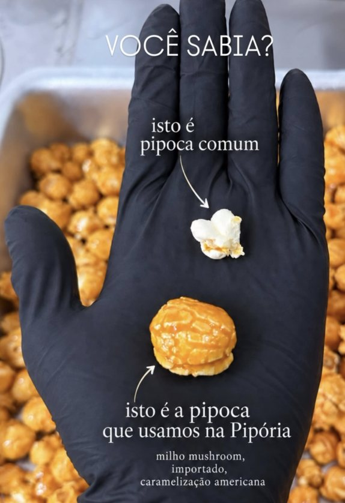

Pipoca não é tudo igual, e a gente prova.
Deixamos a tradicional de lado para trazer diretamente dos EUA o legítimo milho Mushroom.
Enquanto a comum estoura em formato de “borboleta”, a Mushroom vira uma obra de arte redondinha, super crocante e perfeita para aguentar aquela calda caprichada de caramelo ou chocolate sem murchar.
Aqui na Pipória, além de usarmos o melhor milho, ainda fazemos a seleção uma a uma, para que você tenha a melhor experiência ao comer.
- Milho mushroom importado e caramelização americana.
- Formato redondo, que segura a calda sem murchar.
- Seleção manual, pipoca por pipoca.
Uma pipocaria de outro mundo, em Uberlândia
A Pipória vende pipoca gourmet no balde, com o recheio que você escolher. Cada sabor leva o nome de um planeta, e dá para combinar até dois recheios no mesmo balde.
Pipocas gourmet
Sete clássicos, de Lua (leitinho) a Saturno (Nutella), em baldes de 500 ml e 1 L.
Açaí na garrafa e panqueca
Além da pipoca, o cardápio tem açaí para levar na garrafa e panqueca com calda.
Peça do seu jeito
Monte o pedido no site e envie pelo WhatsApp. Retirada na loja ou entrega, você combina com a gente.
Onde estamos
Av. Solidariedade, 1230, Uberlândia - MG. Acompanhe as novidades no Instagram @piporia.gourmet.